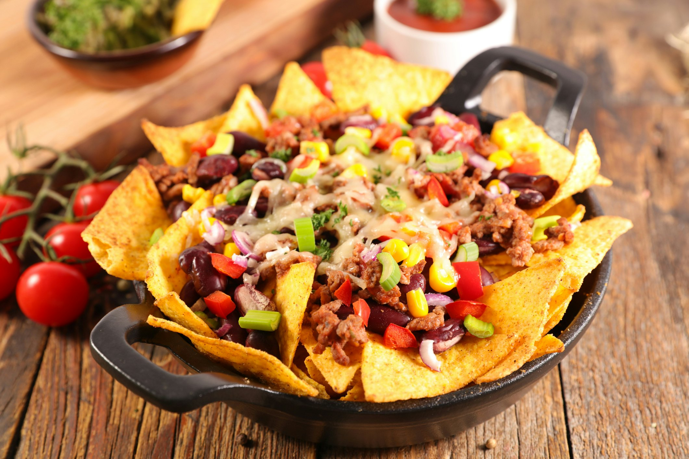

Mexican Cuisine

Tacos
Ingredients:
- 8 small tortillas
- 500g ground beef
- 1 packet taco seasoning
- 1 cup shredded lettuce
- 1 cup diced tomatoes
- 1 cup shredded cheese
- Optional: sour cream and guacamole
Instructions:
- Cook ground beef in a skillet over medium heat until browned.
- Add taco seasoning and a small amount of water; simmer for 5 minutes.
- Warm tortillas in a pan or microwave.
- Assemble tacos with beef, lettuce, tomatoes, and cheese.
- Top with sour cream and guacamole if desired. Serve warm.

Burritos
Ingredients:
- 4 large tortillas
- 500g cooked chicken or beef
- 1 cup cooked rice
- 1 cup refried beans
- 1 cup shredded cheese
- 1/2 cup salsa
- Optional: sour cream and guacamole
Instructions:
- Warm tortillas in a pan or microwave.
- Layer rice, beans, meat, cheese, and salsa on each tortilla.
- Fold the sides of the tortilla inward, then roll it up tightly.
- Optional: grill the burritos in a pan for a crispy exterior. Serve warm.

Quesadillas
Ingredients:
- 4 large tortillas
- 2 cups shredded cheese
- 1 cup cooked chicken or vegetables
- 1/2 cup salsa
- Optional: sour cream and guacamole
Instructions:
- Heat a large skillet over medium heat.
- Place a tortilla in the skillet and sprinkle half with cheese and fillings.
- Fold the tortilla in half and cook until golden brown on each side.
- Cut into wedges and serve with salsa, sour cream, or guacamole.

Nachos
Ingredients:
- 1 large bag tortilla chips
- 2 cups shredded cheese
- 1 cup cooked ground beef or beans
- 1/2 cup diced tomatoes
- 1/4 cup sliced jalapeños
- Optional: sour cream and guacamole
Instructions:
- Preheat oven to 200°C (400°F).
- Spread tortilla chips on a large baking sheet.
- Top with cheese, meat or beans, tomatoes, and jalapeños.
- Bake for 5-7 minutes until cheese is melted.
- Serve with sour cream and guacamole.